Binglu Wang
王秉路
- E-mail:wbl921129@gmail.com
About Me
2017 - 2021
- Ph.D student, School of Automation, Northwestern Polytechnical University (NWPU)
February 2022 - present
- Postdoctoral, Beijing Institute of Technology (BIT), Collaborating mentors: Erke Mao, Teng Long
December 2021 - present
- Associate Professor, College of Information and Control Engineering, Xi'an University of Architecture and Technology
Reaserch Interests
Autopilot, Signal Processing, Computer Vision
- At present, we mainly use the camera-lidar fusion method for depth completion, object detection, semantic segmentation, tracking and online cross-sensor calibration, and design the fusion of multiple modalities according to different vision tasks. Optimize the processing of different modal signals collected by different sensors such as cameras and lidars. Aiming at how to model vehicle-road collaboration in the same coordinate system, how to realize the signals collected by multiple sensors at the vehicle end and road end to work in 4D space and other directions.
Remote sensing image processing
- My research on remote sensing images mainly includes object detection and low-level remote sensing image super-resolution
Medical Image Processing
- Apply image processing technology to analyze, process and interpret various image data in the medical field, so as to help doctors diagnose and treat diseases more accurately, and at the same time improve medical efficiency and reduce medical costs.
Publication
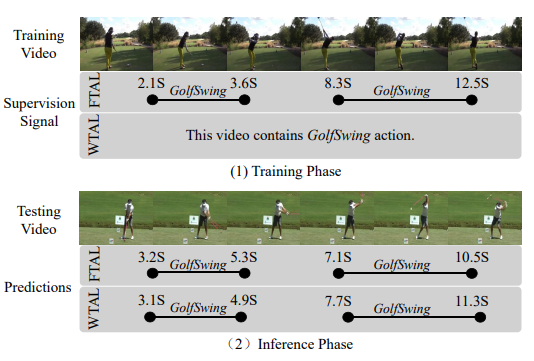
Temporal Action Localization in the Deep Learning Era: A Survey
IEEE Transactions on Pattern Analysis and Machine Intelligence, 2023
@article{wang2023temporal,
title={Temporal action localization in the deep learning era: A survey},
author={Wang, Binglu and Zhao, Yongqiang and Yang, Le and Long, Teng and Li, Xuelong},
journal={IEEE Transactions on Pattern Analysis and Machine Intelligence},
year={2023},
publisher={IEEE}
}

Coarse-to-Fine Nutrition Prediction
IEEE Transactions on Multimedia, 2023
@article{wang2023coarse,
title={Coarse-to-Fine Nutrition Prediction},
author={Wang, Binglu and Bu, Tianci and Hu, Zaiyi and Yang, Le and Zhao, Yongqiang and Li, Xuelong},
journal={IEEE Transactions on Multimedia},
year={2023},
publisher={IEEE}
}
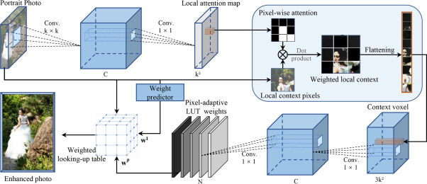
Learning Pixel-Adaptive Weights for Portrait Photo Retouching
Pattern Recognition, 2023
@article{wang2023learning,
title={Learning pixel-adaptive weights for portrait photo retouching},
author={Wang, Binglu and Lu, Chengzhe and Yan, Dawei and Zhao, Yongqiang and Li, Ning and Li, Xuelong},
journal={Pattern Recognition},
volume={143},
pages={109775},
year={2023},
publisher={Elsevier}
}
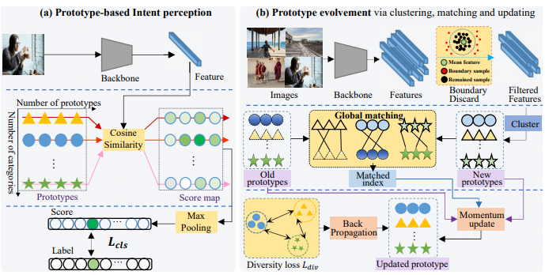
Prototype-based Intent Perception
IEEE Transactions on Multimedia, 2023
@article{wang2023prototype,
title={Prototype-based intent perception},
author={Wang, Binglu and Yang, Kang and Zhao, Yongqiang and Long, Teng and Li, Xuelong},
journal={IEEE Transactions on Multimedia},
year={2023},
publisher={IEEE}
}

Exploring Sub-Action Granularity for Weakly Supervised Temporal Action Localization
IEEE Transactions on Circuits and Systems for Video Technology, 2021
@article{wang2021exploring,
title={Exploring sub-action granularity for weakly supervised temporal action localization},
author={Wang, Binglu and Zhang, Xun and Zhao, Yongqiang},
journal={IEEE Transactions on Circuits and Systems for Video Technology},
volume={32},
number={4},
pages={2186--2198},
year={2021},
publisher={IEEE}
}

Multiple Instance Graph Learning for Weakly Supervised Remote Sensing Object Detection
IEEE Transactions on Geoscience and Remote Sensing, 2021
@article{wang2021multiple,
title={Multiple instance graph learning for weakly supervised remote sensing object detection},
author={Wang, Binglu and Zhao, Yongqiang and Li, Xuelong},
journal={IEEE Transactions on Geoscience and Remote Sensing},
volume={60},
pages={1--12},
year={2021},
publisher={IEEE}
}
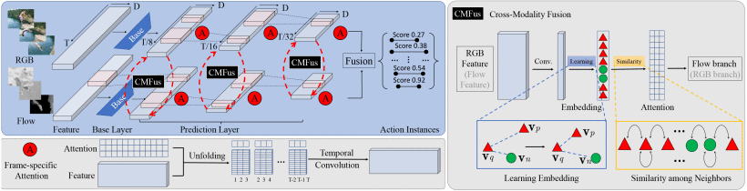
POLO: Learning Explicit Cross-Modality Fusion for Temporal Action Localization
IEEE Signal Processing Letters, 2021
@article{wang2021polo,
title={Polo: Learning explicit cross-modality fusion for temporal action localization},
author={Wang, Binglu and Yang, Le and Zhao, Yongqiang},
journal={IEEE Signal Processing Letters},
volume={28},
pages={503--507},
year={2021},
publisher={IEEE}
}
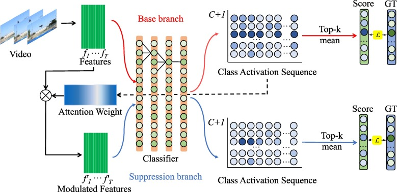
PFWNet: Pretraining neural network via feature jigsaw puzzle for weakly-supervised temporal action localization
Neurocomputing, 2021
@article{wang2021pfwnet,
title={PFWNet: Pretraining neural network via feature jigsaw puzzle for weakly-supervised temporal action localization},
author={Wang, Binglu and Zhao, Yongqiang and Zhang, Yani},
journal={Neurocomputing},
volume={443},
pages={162--173},
year={2021},
publisher={Elsevier}
}
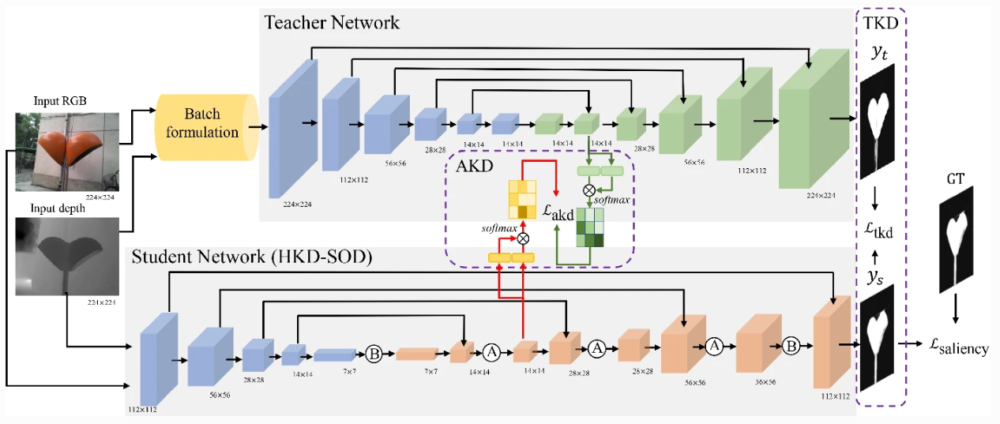
LCH: fast RGB-D salient object detection on CPU via lightweight convolutional network with hybrid knowledge distillation
Visual Computer, 2023
@article{wang2023lch,
title={LCH: fast RGB-D salient object detection on CPU via lightweight convolutional network with hybrid knowledge distillation},
author={Wang, Binglu and Zhang, Fan and Zhao, Yongqiang},
journal={The Visual Computer},
pages={1--18},
year={2023},
publisher={Springer}
}
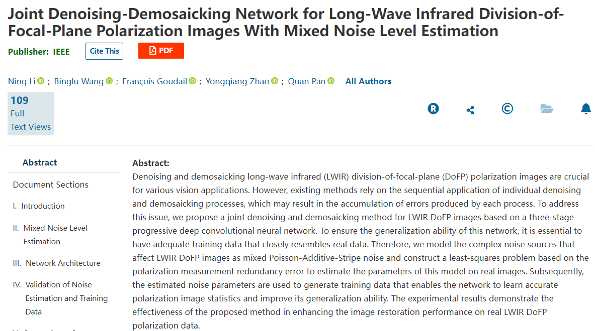
Joint Denoising-Demosaicking Network for Long-Wave Infrared Division-of-Focal-Plane Polarization Images with Mixed Noise Level Estimation
IEEE Transactions on Image Processing, 2023
@article{li2023joint,
title={Joint Denoising-Demosaicking Network for Long-Wave Infrared Division-of-Focal-Plane Polarization Images With Mixed Noise Level Estimation},
author={Li, Ning and Wang, Binglu and Goudail, Fran{\c{c}}ois and Zhao, Yongqiang and Pan, Quan},
journal={IEEE Transactions on Image Processing},
year={2023},
publisher={IEEE}
}
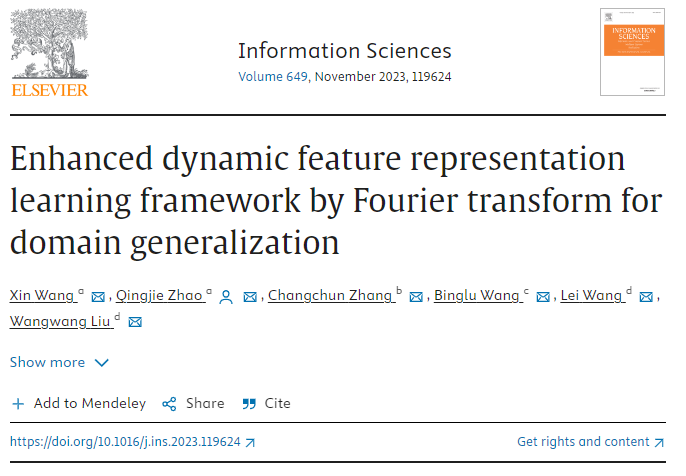
Enhanced dynamic feature representation learning framework by Fourier transform for domain generalization
Information Sciences, 2023
@article{wang2023enhanced,
title={Enhanced dynamic feature representation learning framework by fourier transform for domain generalization},
author={Wang, Xin and Zhao, Qingjie and Zhang, Changchun and Wang, Binglu and Wang, Lei and Liu, Wangwang},
journal={Information Sciences},
volume={649},
pages={119624},
year={2023},
publisher={Elsevier}
}
Multi-level Gated Bayesian Recurrent Neural Network for State Estimation
arXiv preprint arXiv:2310.17187
@article{yan2023multi,
title={Multi-level Gated Bayesian Recurrent Neural Network for State Estimation},
author={Yan, Shi and Liang, Yan and Zheng, Le and Fan, Mingyang and Wang, Binglu and Wang, Xiaoxu},
journal={arXiv preprint arXiv:2310.17187},
year={2023}
}
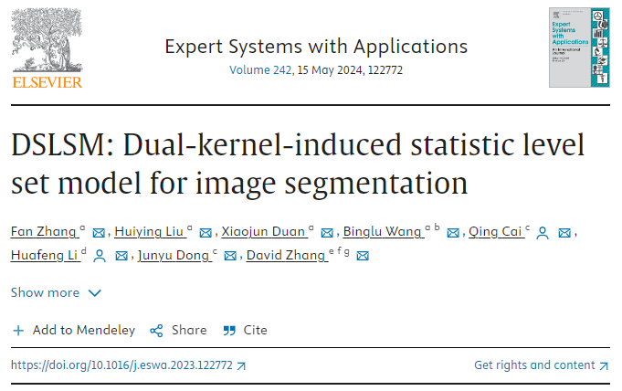
DSLSM: Dual-kernel-induced statistic level set model for image segmentation
Expert Systems with Applications, 2023
@article{zhang2024dslsm,
title={DSLSM: Dual-kernel-induced statistic level set model for image segmentation},
author={Zhang, Fan and Liu, Huiying and Duan, Xiaojun and Wang, Binglu and Cai, Qing and Li, Huafeng and Dong, Junyu and Zhang, David},
journal={Expert Systems with Applications},
volume={242},
pages={122772},
year={2024},
publisher={Elsevier}
}
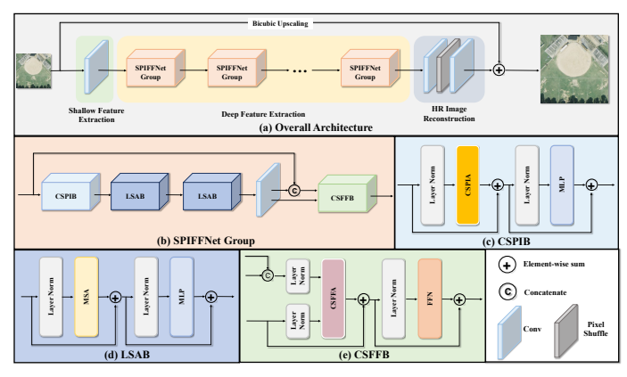
Cross-Spatial Pixel Integration and Cross-Stage Feature Fusion Based Transformer Network for Remote Sensing Image Super-Resolution
IEEE Transactions on Geoscience and Remote Sensing, 2023
@article{lu2023cross,
title={Cross-Spatial Pixel Integration and Cross-Stage Feature Fusion-Based Transformer Network for Remote Sensing Image Super-Resolution},
author={Lu, Yuting and Min, Lingtong and Wang, Binglu and Zheng, Le and Wang, Xiaoxu and Zhao, Yongqiang and Yang, Le and Long, Teng},
journal={IEEE Transactions on Geoscience and Remote Sensing},
volume={61},
pages={1--16},
year={2023},
publisher={IEEE}
}
A Dual-Attention Deep Discriminative Domain Generalization Model for Hyperspectral Image Classification
Information Sciences, 2023
@article{zhao2023dual,
title={A Dual-Attention Deep Discriminative Domain Generalization Model for Hyperspectral Image Classification},
author={Zhao, Qingjie and Wang, Xin and Wang, Binglu and Wang, Lei and Liu, Wangwang and Li, Shanshan},
journal={Remote Sensing},
volume={15},
number={23},
pages={5492},
year={2023},
publisher={MDPI}
}
Forward modeling and inverse estimation for nonlinear filtering
International Journal of Robust and Nonlinear Control, 2023
@article{cui2023forward,
title={Forward modeling and inverse estimation for nonlinear filtering},
author={Cui, Haoran and Zhang, Long and Wang, Xiaoxu and Liu, Mingyong and Wang, Binglu},
journal={International Journal of Robust and Nonlinear Control},
volume={33},
number={10},
pages={5734--5757},
year={2023},
publisher={Wiley Online Library}
}
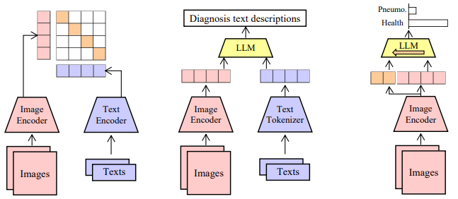
PneumoLLM: Harnessing the Power of Large Language Model for Pneumoconiosis Diagnosis
arXiv preprint arXiv:2312.03490
@article{song2023pneumollm,
title={PneumoLLM: Harnessing the Power of Large Language Model for Pneumoconiosis Diagnosis},
author={Song, Meiyue and Yu, Zhihua and Wang, Jiaxin and Wang, Jiarui and Lu, Yuting and Li, Baicun and Wang, Xiaoxu and Huang, Qinghua and Li, Zhijun and Kanellakis, Nikolaos I and others},
journal={arXiv preprint arXiv:2312.03490},
year={2023}
}
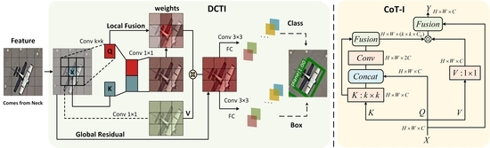
YOLO-DCTI: Small Object Detection in Remote Sensing Base on Contextual Transformer Enhancement
Information Sciences, 2023
@article{min2023yolo,
title={YOLO-DCTI: small object detection in remote sensing base on contextual transformer enhancement},
author={Min, Lingtong and Fan, Ziman and Lv, Qinyi and Reda, Mohamed and Shen, Linghao and Wang, Binglu},
journal={Remote Sensing},
volume={15},
number={16},
pages={3970},
year={2023},
publisher={MDPI}
}
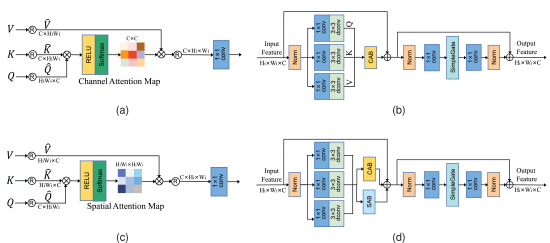
Hybrid Attention-Based U-Shaped Network for Remote Sensing Image Super-Resolution
IEEE Transactions on Geoscience and Remote Sensing, 2023
@article{wang2023hybrid,
title={Hybrid attention based u-shaped network for remote sensing image super-resolution},
author={Wang, Jiarui and Wang, Binglu and Wang, Xiaoxu and Zhao, Yongqiang and Long, Teng},
journal={IEEE Transactions on Geoscience and Remote Sensing},
year={2023},
publisher={IEEE}
}
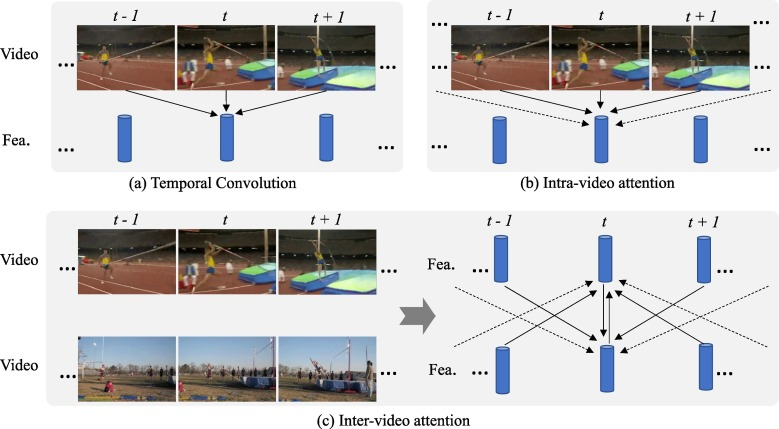
I2net: Mining intra-video and inter-video attention for temporal action localization
Neurocomputing, 2021
@article{zhang2021i2net,
title={I2net: Mining intra-video and inter-video attention for temporal action localization},
author={Zhang, Wei and Wang, Binglu and Ma, Songhui and Zhang, Yani and Zhao, Yongqiang},
journal={Neurocomputing},
volume={444},
pages={16--29},
year={2021},
publisher={Elsevier}
}
Conference Paper
TransGOP: Transformer-Based Gaze Object Prediction
Proceedings of the AAAI Conference on Artificial Intelligence, 2024
@article{wang2024transgop,
title={TransGOP: Transformer-Based Gaze Object Prediction},
author={Wang, Binglu and Guo, Chenxi and Jin, Yang and Xia, Haisheng and Liu, Nian},
journal={arXiv preprint arXiv:2402.13578},
year={2024}
}
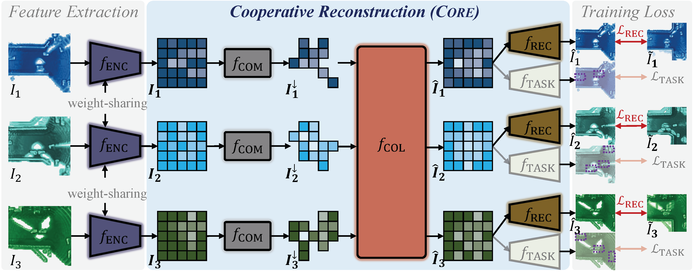
Core: Cooperative reconstruction for multi-agent perception
IEEE/CVF International Conference on Computer Vision 2023
@inproceedings{wang2023core,
title={Core: Cooperative reconstruction for multi-agent perception},
author={Wang, Binglu and Zhang, Lei and Wang, Zhaozhong and Zhao, Yongqiang and Zhou, Tianfei},
booktitle={Proceedings of the IEEE/CVF International Conference on Computer Vision},
pages={8710--8720},
year={2023}
}
Multi-level Deep Learning Kalman Filter
IEEE International Conference on Advanced Robotics & Mechatronics 2023
@inproceedings{yan2023multi,
title={Multi-level Deep Learning Kalman Filter},
author={Yan, Shi and Liang, Yan and Wang, Binglu},
booktitle={2023 International Conference on Advanced Robotics and Mechatronics (ICARM)},
pages={1113--1118},
year={2023},
organization={IEEE}
}
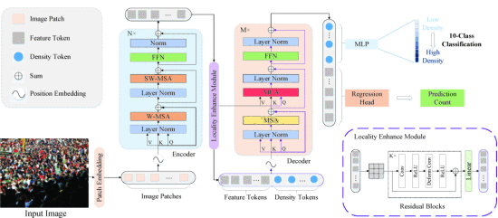
Densitytoken: Weakly-Supervised Crowd Counting with Density Classification
IEEE International Conference on Acoustics, Speech, and Signal Processing, 2023
@inproceedings{hu2023densitytoken,
title={Densitytoken: Weakly-Supervised Crowd Counting with Density Classification},
author={Hu, Zaiyi and Wang, Binglu and Li, Xuelong},
booktitle={ICASSP 2023-2023 IEEE International Conference on Acoustics, Speech and Signal Processing (ICASSP)},
pages={1--5},
year={2023},
organization={IEEE}
}
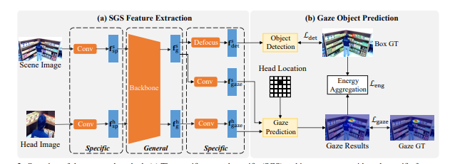
GaTector: A Unified Framework for Gaze Object Prediction
IEEE Conference on Computer Vision and Pattern Recognition, 2022
@inproceedings{wang2022gatector,
title={Gatector: A unified framework for gaze object prediction},
author={Wang, Binglu and Hu, Tao and Li, Baoshan and Chen, Xiaojuan and Zhang, Zhijie},
booktitle={Proceedings of the IEEE/CVF Conference on Computer Vision and Pattern Recognition},
pages={19588--19597},
year={2022}
}
Social Work
- 中国指控学会（陕西）青年科学家俱乐部 轮值主席
- IEEE ARM（自动化学会A类会议）副主编
- 陕西省图形图像学学会理事
- IEEE TPAMI/IEEE TCYB/IEEE TIE/CVPR 等10+国际顶级期刊和重要会议的审稿人
- 北京理工大学博士后联谊会理事长/北京博士后联谊会理事
Teaching Achievements
- 清华AIR-百度Apollo车路协同自动驾驶算法挑战赛 优胜奖
- 西工大教育实验学院大学生创新创业重点支持领域项目（全院唯一）
Awards
- 陕西省高等学校科学技术一等奖(排名2/6)
- 中国产学研学会合作创新与促进优秀奖(排名4/10)
- 西北工业大学优秀毕业生